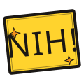

The marks of nih.
"Nih" is Indonesian for "here, take this." The logo is the gesture: a wordmark that says it, and a dot — a coin — that's the thing being handed over. Use these marks across product, comms, and merch.
Primary lockup.
Set in Instrument Serif. The period is a coin in Bitcoin orange — drawn, not typed. This is the canonical mark for product surfaces, docs, and most printed work.
Standalone mark.
For favicons, app icons, social avatars — anywhere the wordmark won't fit. A Bitcoin-orange coin with the first letter of "nih" set in Instrument Serif italic.
Other voices.
For playful or contextual moments. The comic wordmark belongs on the landing page and merch; the stamp belongs in confirmation states and stickers.

One brand, ten voices.
The wordmark adapts to each visual style in the product — same word, same dot, different typography. The dot stays Bitcoin orange in every style. (Each style also has its own optional accent color.)
Three colors do the heavy lifting.
Bitcoin orange is the dot. Ink is the wordmark. Cream is the page. Everything else is a palette variation for context.
#F7931A · rgb(247,147,26)#1A1714 · rgb(26,23,20)#F4EDE0 · rgb(244,237,224)#2A6F6A · rgb(42,111,106)Type stack.
Three families do most of the work. Each visual style adds its own display font on top.
Clear space & minimum size.
Give the mark room. Keep the dot a dot.
Rules of thumb
- Clear space = the width of the dot, in every direction. Don't crowd it.
- Minimum size · wordmark 80px wide · symbol 16px tall.
- The dot stays orange. The wordmark can flex; the dot doesn't.
- Use the comic lockup only where playfulness reads naturally — landing, stickers, merch.
- Use the stamp for confirmation states ("tip sent", "verified", "claimed").
- On photography, lock the wordmark in a paper-cream pill or use the inverted (white) variant.
Stay sharp.
do
- Pair the wordmark with the dot — always together in product surfaces.
- Use orange ONLY for the dot, accent, and CTAs.
- Respect each style's typography. Don't mix Bangers with Paper.
- Animate the dot on key moments (tip sent, claim, borrow).
- Keep ink as the body color in light mode, cream in dark mode.
don't
- Don't change the dot's color. Not even for holidays.
- Don't tilt the wordmark. The stamp tilts; the wordmark doesn't.
- Don't outline-stroke the wordmark unless you're in Komik or Warung context.
- Don't stretch, scale-x, or skew. Use the SVG; never re-render the text.
- Don't put the wordmark on rainbow gradients. Pick a single supporting color.
The files.
All marks are SVG. Open them in any vector tool — Figma, Illustrator, browser. The wordmark relies on Instrument Serif and Bangers from Google Fonts; embed those when exporting to PDF.
{kind=link}
{kind=link}
{kind=link}
{kind=link}
{kind=link}